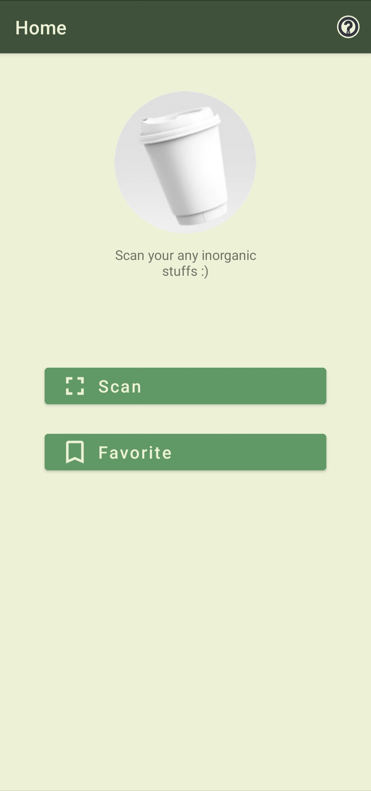

Galeri Screenshot
Tampilan Inorganic Waste App
Klik gambar untuk melihat panel full

Beranda
Ringkasan & akses awal

Scan Benda Plastik
Identifikasi objek untuk rekomendasi

List Tutorial
Tutorial kerajinan dari hasil scan

Tutorial Pembuatan
Langkah-langkah kerajinan

Tutorial Penggunaan
Panduan penggunaan dari awal